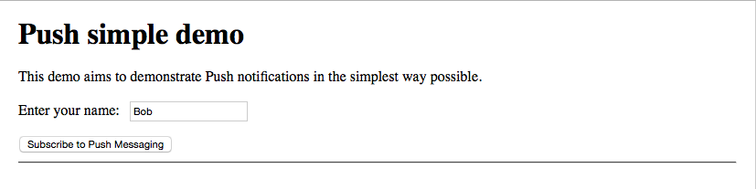

The W3C Push API offers some exciting new functionality for developers to use in web applications: this article provides an introduction to getting Push notifications setup and running, with a simple demo.
The ability to push updates from a server to a client at any time, whether the app is active on your system or not is something that has been enjoyed by native platforms for some time, and it is finally coming to the Web; support is now available in Firefox 43+, and Chrome 42+ on desktop, with mobile platforms hopefully following soon.
Note: Early versions of Firefox OS used a proprietary version of this API called Simple Push. This is being rendered obsolete by the Push API standard.
Note: Some of the client-side code in this demo is heavily influenced by Matt Gaunt's excellent examples in Push Notifications on the Open Web. Thanks for the awesome work Matt!
Demo: the basis of a simple chat server app
The demo we've created provides the beginnings of a simple chat app. You've got a form to enter your chat handle into, and a button to press to subscribe to push messaging. Once the button is pressed, you are subscribed to push messaging, your details are recorded on the server, and a push message is sent that tells all current subscribers that a change has occured in the subscriptions.

To run our demo, follow the instructions on the push-api-demo README. Note that the server-side component still needs a bit of work to make it run in Chrome and generally run in a more reasonable way. But the Push aspects can still be explained thoroughly. More below.
Note: The chat server will become more interesting when browsers start to support the PushMessageData object, allowing data to be sent via push messaging. For the moment, Push messages cannot yet contain data, so we are currently limited to simply using them to notify that "something has happened", and finding out what via some other method.
Technology overview
This section provides a little outline as to what technologies are involved in this example.
Web Push messages are part of the service workers technology family — a service worker is required to be active on the page for it to receive push messages. The service worker receives the push message, and then it is up to you how to then notify the page. You could:
- Send a Web Notification to pop up a system notification to alert the user. This requires permission to be granted for sending push messages.
- Send a message back to the main page via a MessageChannel.
Often a combination of the two will be required; for illustrative purposes, our demo features an example of both.
The service worker also has to subscribe to the push messaging service — each session will be given its own unique endpoint upon subscription, which can be sent to your server and used to send a message to that session's active service worker. Each browser has its own push messaging server to handle sending the push message.
As alluded to above, you need some kind of a server component in your application to handle the endpoint and send push message requests. In our demo we have put together a quick-and-dirty server using NodeJS.
Building up the demo
Let's walk through the code for the demo so we can start to understand how this all works.
The HTML and CSS
There is nothing remarkable about the HTML and CSS for the demo — the HTML contains a simple form to allow you to enter your handle for the chat room, and a button to click to subscribe to push notifications.
The CSS has been kept very minimal so as not to detract from the explaination of the Push API functionality.
The main JavaScript file
The JavaScript is obviously a lot more substantial. Let's take a look at the main JS file.
Variables and inital setup
To start with, we declare some variables to use in our app:
var isPushEnabled = false;
var useNotifications = false;
var subBtn = document.querySelector('.subscribe');
var sendBtn;
var sendInput;
var nameForm = document.querySelector('#form');
var nameInput = document.querySelector('#name-input');
nameForm.onsubmit = function(e) {
e.preventDefault()
};
nameInput.value = 'Bob';
First, we have two booleans to track whether push is subscribed, and whether notification permission has been granted.
Next, we grab a reference to the subscribe/unsubscribe <button>, and declare variables to store references to our message sending button/input (which are only created when subscription is successful.)
Finally we grab references to our name selection form and <input> element, give the input a default value, and use preventDefault() to stop the form submitting when the form is submitted by pressing return.
Next, we request permission to send web notifications, using requestPermission():
Notification.requestPermission();
Now we run a section of code when onload is fired, to start up the process of inialising the app when it is first loaded. First of all we add a click event listener to the subscribe/unsubscribe button that runs our unsubscribe() function if we are already subscribed (isPushEnabled is true), and subscribe() otherwise:
window.addEventListener('load', function() {
subBtn.addEventListener('click', function() {
if (isPushEnabled) {
unsubscribe();
} else {
subscribe();
}
});
Next we check to see if service workers are supported. If so, we register a service worker using ServiceWorkerContainer.register(), and run our initialiseState() function. If not, we deliver an error message to the console.
// Check that service workers are supported, if so, progressively
// enhance and add push messaging support, otherwise continue without it.
if ('serviceWorker' in navigator) {
navigator.serviceWorker.register('sw.js').then(function(reg) {
if(reg.installing) {
console.log('Service worker installing');
} else if(reg.waiting) {
console.log('Service worker installed');
} else if(reg.active) {
console.log('Service worker active');
}
initialiseState(reg);
});
} else {
console.log('Service workers aren\'t supported in this browser.');
}
});
initialiseState()
Now onto the initialiseState() function — this first checks whether notifications are supported on service workers, then sets the useNotifications variable to true if so. Next, it checks whether said notifications are permitted by the user, and if push messages are supported, and reacts accordingly to each.
Finally, it uses ServiceWorkerContainer.ready() to wait until the service worker is active and ready to start doing things. Once its promise resolves, we retrieve our subscription to push messaging using the ServiceWorkerRegistration.pushManager property, which returns a PushManager object that we then call PushManager.getSubscription() on. Once this second inner promise resolves, we enable the subscribe/unsubscribe button (subBtn.disabled = false;), and check that we have a subscription object to work with.
If we do, then we are already subscribed (this is possible when the app is not open in the browser — the service worker can still be active in the background.) This being the case, we update the UI to show that we are subscribed (update the button label), set isPushEnabled to true, grab the subscription endpoint (using PushSubscription.endpoint), and run our updateStatus() function, which as you'll see later communicates with the server.
As an added bonus, we set up a new MessageChannel using the MessageChannel.MessageChannel() constructor, grab a reference to the active service worker using ServiceworkerRegistration.active, then set up a channel betweeen the main browser context and the service worker content using postMessage()
For the full commented code, look at the initialiseState() source on Github (we are not repeating it here for brevity's sake.)
Subscribing and unsubscribing
Let's now turn our attention to the subscribe() and unsubscribe() functions used to subscribe/unsubscribe to the push notification service.
In the case of subscription, we again check that our service worker is active and ready using ServiceWorkerContainer.ready(). When the promise resolves, we subscribe to the service using PushManager.subscribe(). If the subscription is successful, we get a PushSubscription object, extract the subscription endpoint from this (again, PushSubscription.endpoint), and pass it to our updateStatus() function along with the update type (subscribe) to send the necessary details to the server.
We also make the necessary updates to the app state (set isPushEnabled to true) and UI (enable the subscribe/unsubscribe button and set its label text to show that the next time it is pressed it will unsubscribe.)
The unsubscribe() function is pretty similar in structure, but it basically does the opposite; the most notable difference is that it gets the current subscription using PushManager.getSubscription(), and when that promise resolves it unsubscribes using PushSubscription.unsubscribe().
Appropriate error handling is also provided in both functions.
We only show the subscribe() code below, for brevity; see the full subscribe/unsubscribe code on Github.
function subscribe() {
// Disable the button so it can't be changed while
// we process the permission request
subBtn.disabled = true;
navigator.serviceWorker.ready.then(function(reg) {
reg.pushManager.subscribe({userVisibleOnly: true})
.then(function(subscription) {
// The subscription was successful
isPushEnabled = true;
subBtn.textContent = 'Unsubscribe from Push Messaging';
subBtn.disabled = false;
var endpoint = subscription.endpoint;
updateStatus(endpoint,'subscribe');
})
.catch(function(e) {
if (Notification.permission === 'denied') {
// The user denied the notification permission which
// means we failed to subscribe and the user will need
// to manually change the notification permission to
// subscribe to push messages
console.log('Permission for Notifications was denied');
} else {
// A problem occurred with the subscription, this can
// often be down to an issue or lack of the gcm_sender_id
// and / or gcm_user_visible_only
console.log('Unable to subscribe to push.', e);
subBtn.disabled = false;
subBtn.textContent = 'Subscribe to Push Messaging';
}
});
});
}
Updating the status in the app and server
The final function in our main JavaScript is updateStatus(), which updates the UI for sending chat messages when subscribing/unsubscribing and sends a request to update this information on the server (you can't currently send chat messages, but this will be updated once browsers support PushMessageData.)
The function does one of three different things, depending on the statusType passed into it:
subscribe: The button and text input for sending chat messages are created and inserted into the UI (this doesn't yet work, as mentioned above), and an object is sent to the server via XHR containing the status type (subscribe), username of the subscriber, and subscription endpoint.unsubscribe: This basically works in the opposite way to subscribe — the chat UI elements are removed, and an object is sent to the server to tell it that the user has unsubscribed.init: This is run when the app is first loaded/initialised — it creates the chat UI elements, but doesn't send a request to the server.
Again, we have not included the entire function listing for brevity. Examine the full updateStatus() code on Github.
The server
Note: The server component currently isn't ideal: it currently only handles the server-side processing, leaving the static files to be served from somewhere else. This is inefficient and won't work in Chrome even with CORS set up. We are currently working on a rewrite.
As mentioned above, we need a server-side component in our app, to handle storing subscription details, and send out push messages when updates occur. We've hacked together a quick-and-dirty server using NodeJS (server.js), which handles the XHR requests our client-side JavaScript sends out.
It uses a text file to store subscription details — endpoint.txt — which is initially empty.
- When a request with a
statusTypeofsubscribeis received, the server adds the new subscriber's details into the textfile (including the endpoint), and then sends a push message to all the endpoints it has stored to tell all subscribers that someone new has subscribed. - When a request with a
statusTypeofunsubscribeis received, the server finds that subscriber's details from the textfile and removes it, and sends a push message to all continuing subscribers to tell them someone has unsubscribed.
A couple more things to note:
- We are using the https module to create the server, as for security purposes, service workers require a secure connection to function. This is why we need to include the
.pfxsecurity cert in the app, and reference it when creating the server in the Node code. - When you send a push request, you basically just need to send it to the endpoint URL, with a method of
PUT.
The service worker
Now let's have a look at the service worker code (sw.js), which responds to the push messages. An event listener is added to the push event (ServiceWorkerGlobalScope.onpush) so that when a push message is received from the push server, a web notification is issued to let the user know there has been a change in subscription, using ServiceWorkerRegistration.showNotification(). In addition, we send a message back along the message channel we setup in main.js to act as another way of communicating with the main thread.
Note: Web notifications from service workers were introduced around Firefox version 42, but are likely to be removed again while the surrounding functionality (such as Clients.openWindow()) is properly implemented (see bug 1203324 for more details.)
At the bottom of the service worker, you can see the ServiceWorkerGlobalScope.onmessage handler being used to set a reference to the port we want to send the message via.
var port;
self.addEventListener('push', function(event) {
// var messageData = event.data; PushMessageData not yet supported.
var title = 'Yay a message.';
var body = 'Subscription has changed.';
var icon = 'push-icon.png';
var tag = 'push';
event.waitUntil(
self.registration.showNotification(title, {
body: body,
icon: icon,
tag: tag
})
);
port.postMessage('Subscription has changed.');
});
self.onmessage = function(e) {
port = e.ports[0];
}
Note: when browsers start to support PushMessageData, we will probably use the notification to tell the user that a new subscriber of name x has joined the app, and the MessageChannel to send chat messages the the main thread to be displayed on the UI.
Extra steps for Chrome support
To get the app working on Chrome, we need a few extra steps, as Chrome currently relies on Google's Cloud Messaging service to work.
Setting up Google Cloud Messaging
To get this set up, follow these steps:
- Navigate to the Google Developers Console and set up a new project.
- Go to your project's homepage (ours is at
https://console.developers.google.com/project/push-project-978, for example), then- Select the Enable Google APIs for use in your apps option.
- In the next screen, click Cloud Messaging for Android under the Mobile APIs section.
- Click the Enable API button.
- Now you need to make a note of your project number and API key — you'll need them later. To find them:
- Project number: click Home on the left; the project number is clearly marked at the top of your project's home page.
- API key: click Credentials on the left hand menu; the API key can be found on that screen.
manifest.json
You need to include a Google app-style manifest.json file in your app, which references the project number you made a note of earlier in the gcm_sender_id parameter. Here is our simple example manifest.json:
{
"name": "Push Demo",
"short_name": "Push Demo",
"icons": [{
"src": "push-icon.png",
"sizes": "111x111",
"type": "image/png"
}],
"start_url": "/index.html",
"display": "standalone",
"gcm_sender_id": "224273183921"
}
You also need to reference your manifest using a <link> element in your HTML:
<link rel="manifest" href="manifest.json">
userVisibleOnly
Chrome requires you to set the userVisibleOnly parameter to true when subscribing to the push service, which indicates that we are promising to show a notification whenever a push is received. This can be seen in action in our subscribe() function.